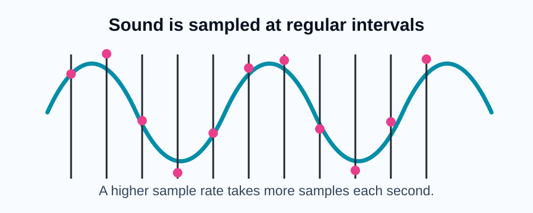
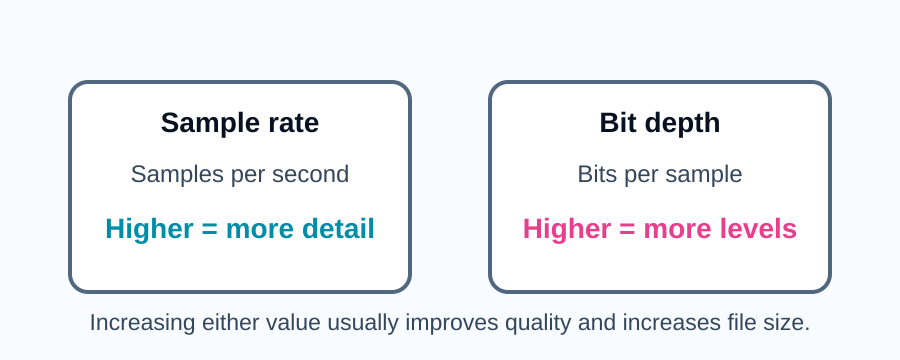

Analogue sound and digital samples
Sound in the real world is analogue. This means it changes continuously. Computers cannot store continuous waves directly, so the sound is measured at regular intervals.
Each measurement is called a sample. The samples are stored as binary numbers.

Sample rate and bit depth
Sample rate is the number of samples taken each second. It is measured in hertz. A higher sample rate captures the wave more often.
Bit depth is the number of bits used for each sample. A higher bit depth can store more possible amplitude values.

| Term | Meaning | Effect if increased |
|---|---|---|
| Sample rate | The number of samples taken each second | More accurate sound and larger file size |
| Bit depth | The number of bits used per sample | More amplitude levels and larger file size |
| Duration | The length of the recording in seconds | Longer recordings need more storage |
Comprehension questions
Q1) State what is meant by sample rate. (1 mark)
Sample rate is the number of sound samples taken each second.
Q2) Explain why increasing sample rate can increase sound quality. (2 marks)
A higher sample rate records the sound wave more often. This means the digital version can more closely match the original sound.
Calculating sound file size
A simple estimate for sound file size is:
sample rate x bit depth x duration
This gives the size in bits for mono sound before compression is considered.
Activity
A 10 second sound clip uses a sample rate of 1,000 Hz and a bit depth of 8 bits. Calculate the file size in bits.
1,000 x 8 x 10 = 80,000 bits.
Key points
- Sound is sampled so it can be stored digitally.
- Sample rate is the number of samples taken each second.
- Bit depth is the number of bits used per sample.
- Increasing sample rate, bit depth or duration increases file size.